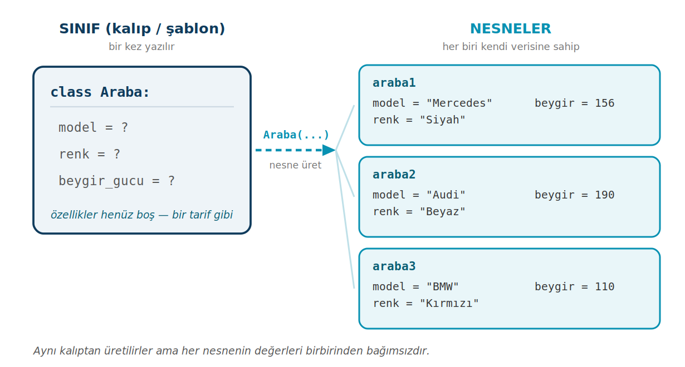
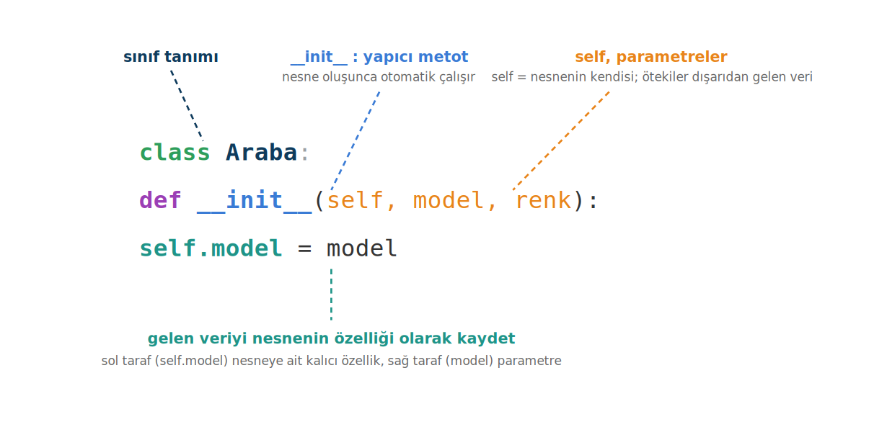

Sınıflar, Nesneler ve __init__
Nesne tabanlı programlama, gerçek dünyadaki bir varlığı (öğrenci, araba, banka hesabı) hem verisiyle hem davranışıyla tek bir bütün olarak modellememizi sağlar. Bu sayfa class ile sınıf tanımlamayı, nesne oluşturmayı ve __init__ ile self'i anlatır.
Bu sayfada
1Nesne tabanlı programlama neden vardır?
Bir okul otomasyonu yazdığınızı düşünün. Tek bir öğrenciyi tutmak kolay: bir ad, bir soyad, bir numara, birkaç not. Ama ikinci öğrenci gelince ikinci bir ad, ikinci bir soyad, ikinci bir not listesi açmanız gerekir. Yüz öğrenci olunca ortaya ad1, ad2, ad3 gibi yüzlerce dağınık değişken çıkar ve bunları birlikte yönetmek imkânsızlaşır.
Asıl sorun şudur: bizim kafamızda "öğrenci" tek bir bütündür: adı, numarası ve davranışları (not ekleme, ortalama hesaplama) bir aradadır. Oysa düz programlamada bu bütünü parçalara bölmek zorunda kalırız. Nesne tabanlı programlama (NTP / OOP), tam da bu kopukluğu giderir ve karmaşık sistemleri daha modüler, anlaşılır ve sürdürülebilir kılar. NTP'nin üzerine kurulduğu dört temel ilke vardır (kapsülleme, kalıtım, çok biçimlilik ve soyutlama), ama bunlara sırası geldiğinde gireceğiz: kalıtıma 10. haftada, diğer üçüne 11. haftada. 6. haftada önce temeli atıyoruz: sınıf ve nesne.
Aslında nesnelerle ilk günden beri çalışıyorsunuz. Python'da bir liste, bir metin, bir sayı: hepsi birer nesnedir ve her birinin kendi metotları vardır:
liste = [1, 2, 3, 4, 5]
print(type(liste)) # <class 'list'>
type(liste) size list der; yani liste, list adındaki sınıfın bir örneğidir (nesnesidir). liste.append(6) ya da liste.sort() yazabilmenizin sebebi de budur: append ve sort, list sınıfının metotlarıdır. Bu bölümde öğreneceğimiz şey, işte bu hazır sınıflar gibi kendi sınıflarımızı yazmaktır.
Bir sınıfı kurabiye kalıbı gibi düşünün: kalıp, kurabiyenin nasıl olacağını tanımlar ama kendisi yenilebilir bir kurabiye değildir. Nesne ise o kalıptan üretilen somut kurabiyedir. Bir kalıptan istediğiniz kadar kurabiye çıkarabilirsiniz; her biri aynı biçimdedir ama biri çikolatalı, biri sade olabilir.

Görselde Araba sınıfı kalıptır; araba1, araba2, araba3 ise bu kalıptan üretilmiş, her biri kendi verisini taşıyan nesnelerdir. Kalıbı bir kez yazarız, ondan dilediğimiz kadar nesne üretiriz.
2Sınıf tanımlama: class
Bir sınıf tanımlamak için class anahtar kelimesini kullanırız. Sınıf adları, geleneksel olarak büyük harfle başlar (Araba, Ogrenci, BankaHesabi). Sınıf yalnızca kalıptır; ondan gerçek bir nesne üretmek için sınıf adını parantezle çağırırız. Bir nesnenin özelliklerine ise nokta (.) ile erişiriz.
class Araba:
model = 'Bmw 3.20i'
renk = 'Gümüş'
max_hiz = 220
yakit = 'Benzin'
arabam = Araba() # nesne oluşturma
print(arabam.model) # Bmw 3.20i
print(arabam.renk) # Gümüş
Buraya kadar her şey iyi, ama bir sorun var: bu kalıptan üreteceğimiz her araba aynı modelde, aynı renkte olur. Çünkü değerleri sınıfın içine sabit yazdık. Oysa biz farklı nesnelerin farklı verilere sahip olmasını istiyoruz. İşte burada __init__ devreye girer.
3__init__ yapıcı metodu ve self
__init__, Python'da özel bir metottur ve bir nesne oluşturulduğu anda otomatik olarak çalışır. Görevi, yeni doğan nesneye başlangıç verilerini yerleştirmektir. Sayesinde her nesneye kendine özgü değerler verebiliriz; artık tüm arabalar aynı olmak zorunda değildir. İsmi iki alt çizgiyle başlayıp iki alt çizgiyle biter; bu tür özel metotlara "dunder" (double underscore) metotlar denir ve Python bunları belirli durumlarda kendisi çağırır.
Teknik olarak nesneyi oluşturan __new__ metodudur; __init__ oluşturulan nesneyi başlatır. Günlük kullanımda __init__'e yapıcı metot denir.
__init__ metodunun ilk parametresine geleneksel olarak self adı verilir. self, üzerinde çalışılan nesnenin kendisini temsil eder. Yani self.model = model yazdığınızda, "şu an oluşturulan nesnenin model özelliğine, dışarıdan gelen model değerini ata" demiş olursunuz. self sayesinde her nesne kendi verisini kendi içinde tutar.

self'in rolüclass Araba:
def __init__(self, model, renk, beygir_gucu):
self.model = model
self.renk = renk
self.beygir_gucu = beygir_gucu
# Yeni bir nesne oluşturma
araba1 = Araba('Mercedes C180', 'Siyah', 156)
print(araba1.model, araba1.renk, araba1.beygir_gucu)
Mercedes C180 Siyah 156
Araba('Mercedes C180', 'Siyah', 156) yazdığınız anda Python arka planda __init__'i çağırır; self yeni nesneyi, model/renk/beygir_gucu ise verdiğiniz değerleri temsil eder. self.model = model satırları bu değerleri nesneye kalıcı olarak yazar.
Aynı sınıftan istediğiniz kadar nesne üretebilirsiniz; her birinin verileri birbirinden tamamen bağımsızdır:
araba1 = Araba('Mercedes C180', 'Siyah', 156)
araba2 = Araba('Audi A4', 'Beyaz', 190)
print(araba1.model) # Mercedes C180
print(araba2.model) # Audi A4
araba1 ile araba2 aynı kalıptan çıkmıştır ama biri Mercedes, diğeri Audi'dir. Birinin verisini değiştirmek diğerini etkilemez.
__init__ içinde self. ön ekini unutmayın. model = model yazarsanız değer nesneye kaydedilmez; yerel bir değişken olur ve fonksiyon bitince yok olur. Doğrusu self.model = model'dir.
Bir örnek daha: öğrenci bilgilerini tutan bir Ogrenci sınıfı. Özelliklerden biri (notlar) bir liste; özellik olarak her tür değer saklanabilir. İki nesne oluşturup özelliklerini yazdırıyoruz.
class Ogrenci:
def __init__(self, ad, numara, notlar):
self.ad = ad
self.numara = numara
self.notlar = notlar
ogr1 = Ogrenci("Ayşe", 101, [85, 90, 78])
ogr2 = Ogrenci("Mehmet", 102, [60, 72, 55])
print(ogr1.ad, ogr1.numara, ogr1.notlar)
print(ogr2.ad, ogr2.numara, ogr2.notlar)
print(ogr1.ad, "ilk notu:", ogr1.notlar[0])
Ayşe 101 [85, 90, 78] Mehmet 102 [60, 72, 55] Ayşe ilk notu: 85
ogr1.notlar bir liste olduğu için elemanlarına da indeksle ulaşılır: ogr1.notlar[0] ilk nottur. İki nesnenin listeleri birbirinden bağımsızdır.
4Özellikleri güncelleme
Bir nesnenin özelliğini, oluşturduktan sonra da değiştirebilirsiniz. Yine nokta gösterimini kullanırız:
araba1 = Araba('Mercedes C180', 'Siyah', 156)
print(araba1.beygir_gucu) # 156
araba1.beygir_gucu = 180 # özelliği güncelle
print(araba1.beygir_gucu) # 180
Bu değişiklik yalnızca araba1'i etkiler; aynı sınıftan üretilmiş başka nesneler eski değerlerini korur.
5Sınıf değişkeni ile nesne değişkeni
İlk Araba sınıfında model = 'Bmw 3.20i' gibi değerleri doğrudan sınıfın gövdesine yazmıştık. Bunlara sınıf değişkeni denir ve o sınıftan üretilen tüm nesneler için ortaktır. Sonra değerleri self.model = model ile __init__ içinde tanımladık; bunlara nesne (örnek) değişkeni denir ve her nesneye özeldir.
Pratikte neredeyse her zaman ikincisini, yani __init__ içinde self ile tanımlanan nesne değişkenlerini kullanırız; çünkü asıl istediğimiz, her nesnenin kendi verisine sahip olmasıdır. Sınıf değişkenleri ise tüm nesneler için sabit kalması gereken bilgilerde (örneğin tüm dairelerin paylaştığı pi = 3.14) işe yarar.
self'i bir köprü gibi düşünün: metodun "şu an hangi nesne üzerinde çalışıyorum?" sorusunun cevabıdır; nesnenin verisine self. üzerinden ulaşırsınız.
(a) __init__ içinde self'i unutmak.
def __init__(model): # self yok
self.model = model
Nesne oluşturulurken Python nesneyi ilk argüman olarak gönderir ama yer bulamaz: TypeError: Araba.__init__() takes 1 positional argument but 2 were given.
Doğrusu:
def __init__(self, model):
self.model = model
(b) __init__ yerine __int__ yazmak.
def __int__(self, model): # __init__ değil
self.model = model
Python __int__'i yapıcı olarak tanımaz, __init__ hiç çalışmaz. Nesne argümanla oluşturulursa TypeError: Araba() takes no arguments hatası alınır; argümansız (Araba()) oluşturulursa hata vermez ama özellik oluşmaz ve araba.model satırında AttributeError: 'Araba' object has no attribute 'model' çıkar.
Doğrusu:
def __init__(self, model):
self.model = model
(c) Nesne oluşturmadan sınıf adıyla özelliğe erişmek.
print(Araba.model)
model, __init__ içinde nesneye yazılır; sınıfın kendisinde yoktur: AttributeError: type object 'Araba' has no attribute 'model'.
Doğrusu:
araba = Araba('Fiat')
print(araba.model)
(d) Nesne oluştururken parantezi unutmak.
araba = Araba print(araba.model)
İlk satır hata vermez ama araba bir nesne değil, sınıfın kendisi olur; ikinci satırda AttributeError: type object 'Araba' has no attribute 'model' alınır.
Doğrusu:
araba = Araba('Fiat')
6Kendin yaz
Aşağıdaki görevleri önce kendiniz yazmaya çalışın; takıldığınızda çözümü açın. Görevler kolaydan zora doğru sıralanmıştır.
Görev 1: Film sınıfı
Filmin adını, yapım yılını ve süresini (dakika) __init__ ile alan bir Film sınıfı yazın. İki film nesnesi oluşturup her birinin bilgilerini tek satırda yazdırın.
Yolculuk 2021 118 dk Kayıp Harita 2019 95 dk
Çözümü göster
class Film:
def __init__(self, ad, yil, sure):
self.ad = ad
self.yil = yil
self.sure = sure
film1 = Film("Yolculuk", 2021, 118)
film2 = Film("Kayıp Harita", 2019, 95)
print(film1.ad, film1.yil, film1.sure, "dk")
print(film2.ad, film2.yil, film2.sure, "dk")
Görev 2: Depodaki ürünlerin değeri
Ad, fiyat ve stok adedini alan bir Urun sınıfı yazın; __init__ içinde ürünün toplam değerini (fiyat * stok) de deger özelliği olarak hesaplayın. Üç ürünü bir listede tutup her birinin adını ve değerini yazdırın, en sonda depodaki toplam değeri gösterin. Not: Stok sonradan değişirse deger kendiliğinden güncellenmez. Bunu 7. haftada, Metotlar konusunda, sınıfın içine değeri her çağrıldığında yeniden hesaplayan bir metot yazarak çözeceğiz.
Defter 1000 Kalem 900 Silgi 320 Depodaki toplam değer: 2220
Çözümü göster
class Urun:
def __init__(self, ad, fiyat, stok):
self.ad = ad
self.fiyat = fiyat
self.stok = stok
self.deger = fiyat * stok
urunler = [Urun("Defter", 40, 25), Urun("Kalem", 15, 60), Urun("Silgi", 8, 40)]
toplam = 0
for u in urunler:
print(u.ad, u.deger)
toplam += u.deger
print("Depodaki toplam değer:", toplam)
Görev 3: Nesneleri JSON'a hazırlama
Ad, numara ve bölüm alan bir Ogrenci sınıfı yazın. İki öğrenci nesnesini, özelliklerinden birer sözlük oluşturarak bir listeye dönüştürün ve json.dumps(liste, ensure_ascii=False) ile metne çevirip yazdırın (JSON, 4-5. hafta). Projede sınıf nesnelerini dosyaya kaydederken bu dönüşümü kullanacaksınız.
[{"ad": "Ali", "numara": 101, "bolum": "Bilgisayar"}, {"ad": "Zeynep", "numara": 102, "bolum": "Elektronik"}]
Çözümü göster
import json
class Ogrenci:
def __init__(self, ad, numara, bolum):
self.ad = ad
self.numara = numara
self.bolum = bolum
ogrenciler = [Ogrenci("Ali", 101, "Bilgisayar"), Ogrenci("Zeynep", 102, "Elektronik")]
liste = []
for o in ogrenciler:
liste.append({"ad": o.ad, "numara": o.numara, "bolum": o.bolum})
print(json.dumps(liste, ensure_ascii=False))
Görev 4: Hatayı bul
Aşağıdaki kod iki öğrencinin adını ve numarasını yazdırmalıdır. Kod hata vermeden çalışıyor, ama ikinci satırın çıktısı yanlış. Hatayı bulun ve düzeltin.
class Ogrenci:
def __init__(self, ad, numara):
self.ad = ad
self.numara = numara
ogr1 = Ogrenci("Ayşe", 101)
ogr2 = Ogrenci(102, "Mehmet")
print(ogr1.ad, "numarası:", ogr1.numara)
print(ogr2.ad, "numarası:", ogr2.numara)
Ayşe numarası: 101 102 numarası: Mehmet
Açıklama ve düzeltilmiş kod
__init__ değerleri sırayla alır: önce ad, sonra numara. ogr2 oluşturulurken değerler ters sırada verilmiş; bu yüzden 102 ada, "Mehmet" numaraya yazılmış. İki değer de geçerli olduğu için Python bunu hata saymaz. Değerleri parametrelerle aynı sırada verin.
class Ogrenci:
def __init__(self, ad, numara):
self.ad = ad
self.numara = numara
ogr1 = Ogrenci("Ayşe", 101)
ogr2 = Ogrenci("Mehmet", 102)
print(ogr1.ad, "numarası:", ogr1.numara)
print(ogr2.ad, "numarası:", ogr2.numara)
Ayşe numarası: 101 Mehmet numarası: 102
7Konu sonu testi
Aşağıdaki beş soruyu kendiniz çözün. Her sorunun altındaki Cevabı göster satırına tıklayınca doğru cevap ve açıklaması açılır.
-
Bir sınıftan nesne oluşturmak için aşağıdakilerden hangisi kullanılır?
- A)
arabam = Araba() - B)
arabam = Araba - C)
arabam = new Araba() - D)
arabam = class Araba - E)
arabam = init Araba
Cevabı göster
ANesne, sınıf adının parantezle çağrılmasıyla oluşturulur:Araba(). Parantezsiz yazım yalnızca referans verir. - A)
-
__init__metodu ne zaman çalışır?- A) Program kapanırken
- B) Bir nesne oluşturulduğu anda otomatik olarak
- C) Yalnızca elle çağrılırsa
- D) Sınıf tanımlandığı anda
- E) Hiçbir zaman
Cevabı göster
B__init__, nesne oluşturulduğu anda Python tarafından otomatik çağrılır. -
selfneyi temsil eder?- A) Sınıfın adını
- B) Bir global değişkeni
- C) Python'un kendisini
- D) Son oluşturulan değişkeni
- E) Üzerinde çalışılan nesnenin kendisini
Cevabı göster
Eself, metodun üzerinde çalıştığı nesnenin kendisini temsil eder. -
Aşağıdaki kodun çıktısı nedir?
soru4.pyclass Kalem: def __init__(self, renk): renk = renk # dikkat! k = Kalem("mavi") print(k.renk)- A)
mavi - B)
renk - C)
None - D)
AttributeError(renk özelliği yok) - E)
mavi mavi
Cevabı göster
Drenk = renkyazımı yerel bir değişkendir;self.renkolmadığı için nesneninrenközelliği oluşmaz, erişimAttributeErrorverir. - A)
-
Aşağıdaki kodun çıktısı nedir?
soru5.pyclass Sayac: def __init__(self, deger): self.deger = deger a = Sayac(10) b = Sayac(20) a.deger = 99 print(a.deger, b.deger)- A)
99 99 - B)
10 20 - C)
99 20 - D)
10 99 - E) Hata verir
Cevabı göster
Cavebbağımsız nesnelerdir.a.deger = 99yalnızcaa'yı etkiler;b.degerhâlâ20'dir. - A)
Sınıf adlarını büyük harfle başlatın. Her nesne kendi verisini taşır; aynı sınıftan üretilseler de nesnelerin özellikleri birbirinden bağımsızdır. Nesne oluştururken parantezi, __init__ içinde ise self. ön ekini unutmayın.
8Kendi başına dene
Aşağıdaki soruları kendi başınıza çözün; çözümleri verilmemiştir.
- Bir
Dikdortgensınıfı yazınız; genişlik ve yükseklik alsın. Bir nesne oluşturup özelliklerine erişiniz. - Bir
Dairesınıfı yazınız; yarıçap alsın ve__init__içinde çevreyi (2 × 3.14 × yarıçap) hesaplayıp bir özellik olarak saklasın. Bir nesne oluşturup çevreyi yazdırınız. - Bir
Kütüphanesenaryosu kurun: birKitapsınıfı (ad, yazar, durum: "rafta" veya "ödünçte") yazınız. Birkaç kitap nesnesi oluşturup bir listede tutunuz; sonra bir kitabındurumözelliğini "ödünçte" olarak güncelleyip, listedeki tüm kitapların ad ve durumunu yazdırınız.
9İleri okuma
Konuyu Python'un resmî belgelerinden de okuyabilirsiniz:
Bu, dört haftalık Sınıflar dizisinin ilk konusudur. Sırada metotlar ve dunder metotlar (7. hafta), kalıtım (10. hafta), polimorfizm ve kapsülleme (11. hafta) var.